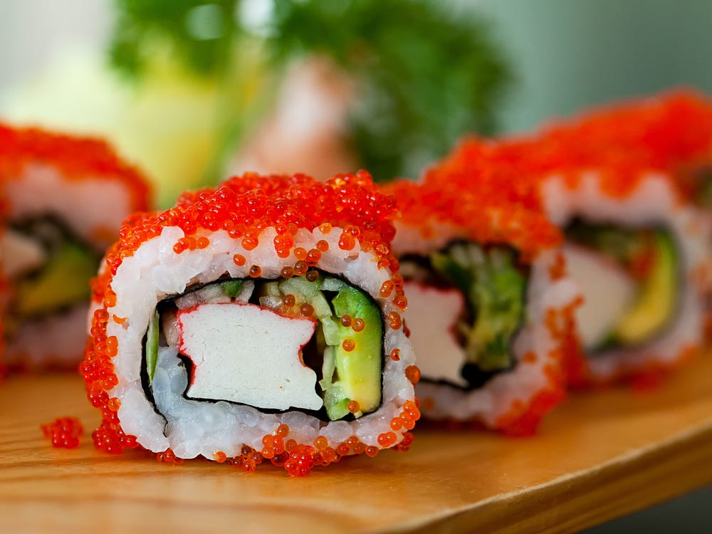
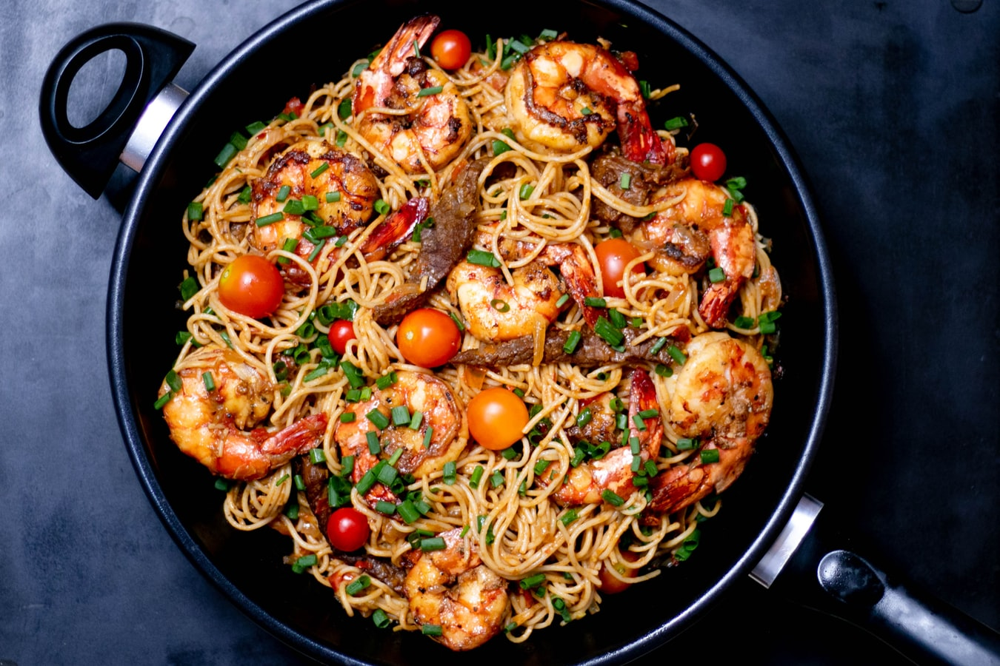
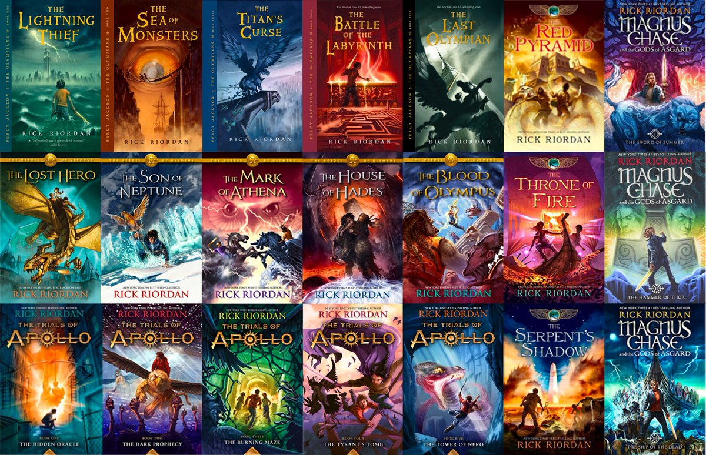
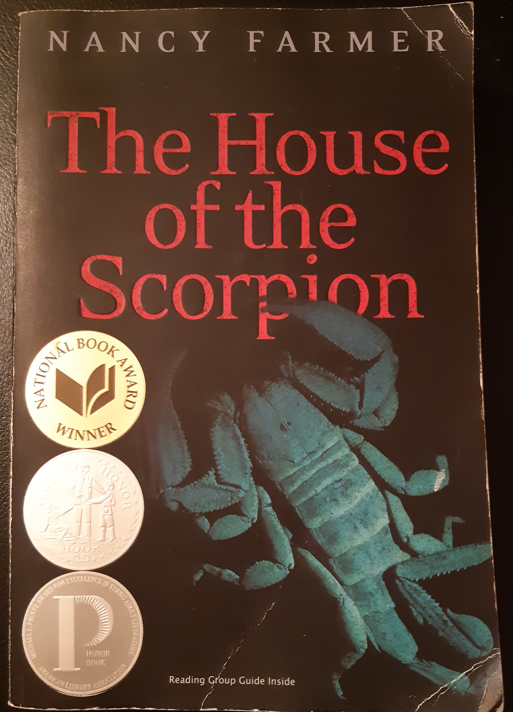
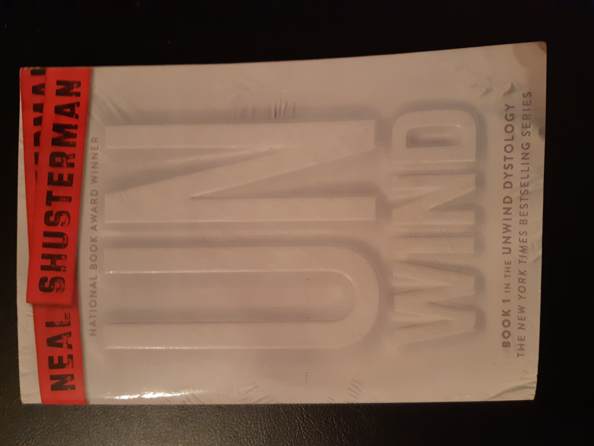
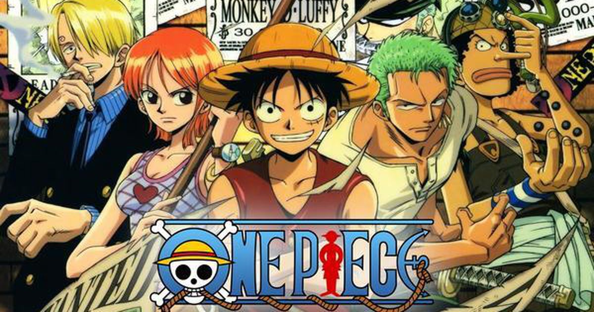
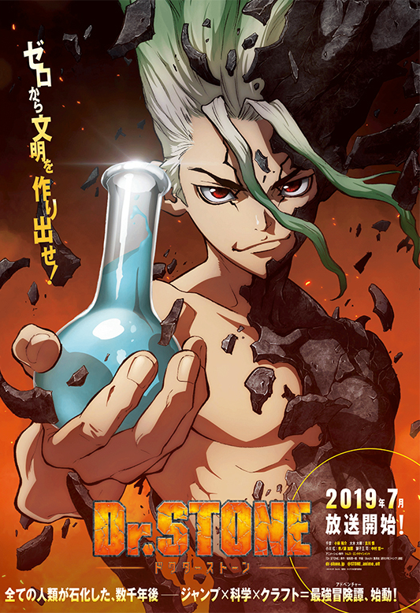

I am a 14 years old living in Scarborough, Ontario. I go to Victoria Park Collegiate Institute and I am currently in Grade 9.
I live a fair distance away from school and whenever I go there in person it takes a good 45 or more minutes. I don't have a
big family in fact it is only me and my parents. Things that I like to do when I have free time include reading, watching anime,
and eating.
Food that I enjoy
Sushi
Pizza
Pasta


Books that I read
Rick Riordan's books and all of it
The House of the Scorpian by Nancy Farmer
Unwind by Neal Shusterman



Anime that I have enjoyed
One Piece
Dr. Stone
One Punch Man


Additional information
Prior to this school, I went to Chartland junior public school for grades kindergarten to 6
and Henry Kelsey Senior Public School from grades 7-8. Places that I have travelled to, include the United States,
specifically to New York and Washington DC to name a few. I've also visited China to Beijing, Wuhan, and Shenzhou
Finally places in Canada that I've visited are made up of Montreal, Winnipeg, Ottawa, and Victoria. Somethings that
I do outside of school are swimming, Kumon, Olympiads. I've now stopped swimming and Kumon
but I am still engaging in Olympiads.
 My Hobbies My Family My Interests References
My Hobbies My Family My Interests References